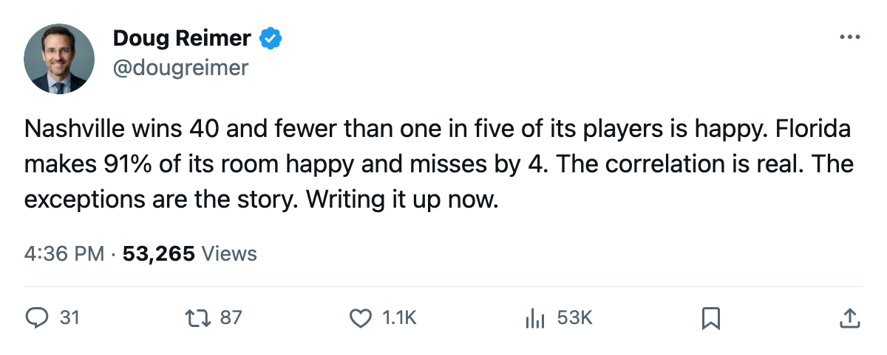
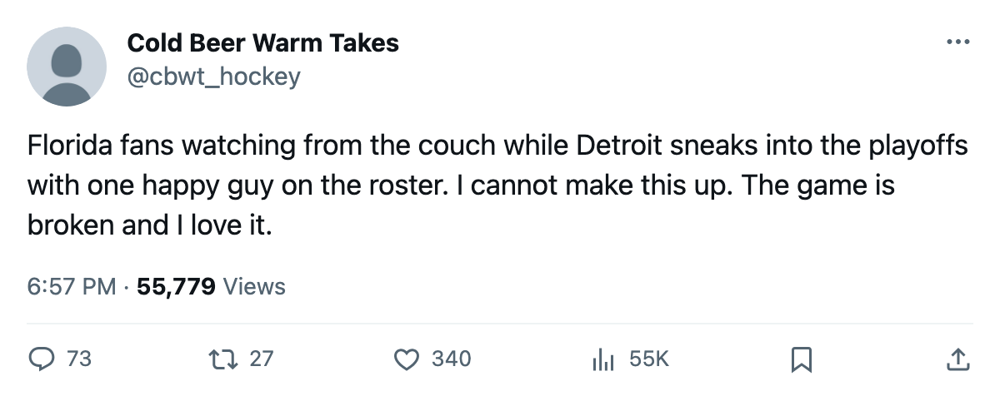

5 Playoff Clubs Have Under 20% Happy Players. 3 Eliminated Clubs Have Over 70%.
The morale-points correlation is 0.569. The trade deadline is where the exceptions bite.
 Doug ReimerAnalytics editor, ex-video coach · The Slot Report
Doug ReimerAnalytics editor, ex-video coach · The Slot Report
The Bureau's Morale Scale and the standings correlate at 0.569 across all 30 clubs. Strip out  Florida Panthers, the league's happiest roster at 91.2% of men carrying morale at 90 or above, and the number rises to 0.658. Strong, but still short of a rule.
Florida Panthers, the league's happiest roster at 91.2% of men carrying morale at 90 or above, and the number rises to 0.658. Strong, but still short of a rule.
Today is the trade deadline. The clubs that need to move a body are the ones where the happiness data says nobody will object. The clubs that need a fix are the ones where the unhappiness runs deeper than what a trade can touch.
The 5 clubs in the playoffs nobody's happy on
From the Morale Scale, I counted the share of each club's roster at 90 or above. Five playoff clubs sit below 20%:
| club | points | status | pct at 90+ morale | players at 90+ | total roster |
|---|---|---|---|---|---|
 Detroit Red Wings Detroit Red Wings | 83 | 7th West | 3.1% | 1 | 32 |
 Mighty Ducks of Anaheim Mighty Ducks of Anaheim | 86 | 6th West | 3.2% | 1 | 31 |
 New York Rangers New York Rangers | 76 | 8th East | 3.4% | 1 | 29 |
 Carolina Hurricanes Carolina Hurricanes | 87 | 6th East | 11.1% | 4 | 36 |
 Nashville Predators Nashville Predators | 96 | 2nd West | 18.8% | 6 | 32 |
Nashville Predators carries 40 wins, the most in the league, and fewer than one in five of its players sits at 90 or above. Detroit Red Wings has 1 man on its 32-player roster at that threshold and still holds the West's 7th place. Carolina Hurricanes won 26 games and 11 overtime games to sneak into the East's 6th spot, and 89% of its dressing room is below 90.
The 3 eliminated clubs everybody's happy on
| club | points | status | pct at 90+ morale | players at 90+ | total roster |
|---|---|---|---|---|---|
| Florida Panthers | 72 | 11th East | 91.2% | 31 | 34 |
 Chicago Blackhawks Chicago Blackhawks | 65 | 12th West | 79.3% | 23 | 29 |
 Pittsburgh Penguins Pittsburgh Penguins | 73 | 10th East | 71.9% | 23 | 32 |
Florida Panthers has 31 of 34 players at 90 or above, the league's highest share by 6 points. It has 72 points and sits 4 behind the East's 8th place. Chicago Blackhawks has 23 of 29 at 90+, 65 points, and the West's worst goal differential at minus-29. Pittsburgh Penguins has 23 of 32 at 90+, 52 injury spells, and 73 points.
What the correlation actually says
The method: I took each club's average morale from the Bureau's scale and its point total. The Pearson coefficient across all 30 clubs is 0.569. Excluding Florida Panthers, whose average morale of 98.9 (on the active-player basis from q1) sits so far from every other club that it anchors the line, the coefficient rises to 0.658.
A 0.658 correlation means morale explains roughly 43% of the variance in points. The other 57% is talent, system, injury luck, schedule, coaching. The exceptions are where that 57% shows up.
Nashville Predators proves that a room where most men aren't at peak happiness can still win 40 games. Florida Panthers proves that a room where almost everyone is content can still miss the playoffs by 4 points. The arrow between these two variables runs both directions at once, so the desk shouldn't use one to predict the other with confidence.
Why this matters at the deadline
Florida Panthers has 31 happy players and nothing to play for. Its GM can move a piece tonight and the room absorbs it. All 31 men are comfortable, so trading one won't read as a betrayal.
Chicago Blackhawks has 23 happy players and 4 expiring contracts on the top-30 list ( Jocelyn Thibault87 at 96 morale,
Jocelyn Thibault87 at 96 morale,  Eric Daze87 at 96,
Eric Daze87 at 96,  Alexei Zhamnov84 at 96,
Alexei Zhamnov84 at 96,  Steve Sullivan84 at 96). The morale data says nobody in that room will fight a rebuild; the culture tolerates a teardown.
Steve Sullivan84 at 96). The morale data says nobody in that room will fight a rebuild; the culture tolerates a teardown.
Detroit Red Wings has 1 happy player and a playoff berth. Its problem isn't solvable with a deadline acquisition. It has Dominik Hasek playing 89% of its minutes at 64 games in, a payroll at $80.89M (the league's highest) returning 83 points, and a dressing room at 91.3 average morale. Those numbers don't add up to a fixable deficit.
Carolina Hurricanes sits 6th in the East on 87 points with 11.1% of its roster at 90+. It has $12.46M in profit and can afford a move, but the morale data points away from personnel, so a trade here buys the wrong thing.
The one quote from the deadline
Tampa Bay GM Michael Burt told The Tunnel's Marcus Bell this week about his own position: 81.8% of his roster at 90+ morale, 94 points, $32.28M in profit, and the flexibility to buy at the deadline. "If a piece falls into my lap that makes us harder to play against in a seven-game series, I can call ownership tonight and the money's there. Most clubs can't do that."
Tampa Bay is the proof of concept on the other side: a club that's happy AND winning AND has the money. The correlation works here because the happiness and the wins came from the same source.
The 8 clubs in the middle
Between the outliers, 8 clubs that made the playoffs sit between 46.7% and 77.4% at 90+ morale. These are the clubs where the correlation holds: reasonably happy, reasonably winning.  Toronto Maple Leafs at 83.3%,
Toronto Maple Leafs at 83.3%,  Colorado Avalanche at 75.9%,
Colorado Avalanche at 75.9%,  Washington Capitals at 77.4%,
Washington Capitals at 77.4%,  New Jersey Devils at 60.6%. For these clubs, morale and points move together, and the deadline is about holding that balance.
New Jersey Devils at 60.6%. For these clubs, morale and points move together, and the deadline is about holding that balance.
The data answers one question plainly: across 30 clubs, the happy club wins more often than not. The deadline asks a harder one: can the unhappy clubs fix things by tonight? For Florida Panthers, Chicago Blackhawks and Pittsburgh Penguins, no; they're done. For Nashville Predators, Carolina Hurricanes, Detroit Red Wings, Mighty Ducks of Anaheim and New York Rangers, morale is not the reason to reach for the trade button. You already have 83 to 96 points. The locker room will sort itself out if April goes right, or it won't, and a trade tonight changes neither.

